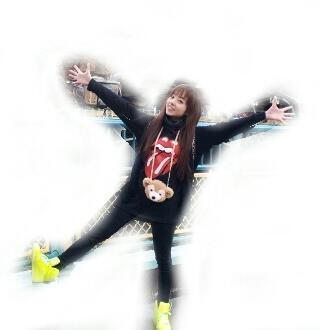

| 2012/11 23 Fri | 川村真洋 質問かえし ろってぃ。♪ |
ほっほーい☆
ろってぃ-だよ / ! !

hello♪
皆げんきぃ?
シチュモンかえし。
(*・ω・*)...グヘヘ
★ディズニー行ったりしたら
周りで騒ぎにならない?
☆ならなかったよーん♪
★ろってぃ-は夜型人間ですか?
☆ん〜 いつも2時とかに
なっちゃうから
仕事がない日とかは
12時までになるべく寝ようと
心掛けてるよ*^^*
て言って、
いつもまわっちゃうんだけどね...
★もし、ろってぃ-が
ディズニーパレードに
出演できるとしたら
何の、キャラクターになりたい?
☆ミッキーミニーとかドナルド
みたいな元気な感じのキャラを
したいなぁ〜*^^*
何かピョンピョンしたり
いっぱい動きまわれそうで
やってて楽しそう^^))
★混んでた?寒なかった?
☆混んでた混んでたぁ〜(´ω`)
ほんで、夜 なかなかと
寒かったよぉ〜^^
二人とも薄着やったからなあ,,
★タワーオブテラーは乗った?
☆もちろん乗ったさっ!!
★10/28のblogの、
個別私服はどこのshopで
買ったものなんですかー??
☆DATURAってゆうお店だよん♪
★ろってぃのほっぺ
何でそんなに可愛いの?
☆えっ、))
ろってぃの頬っぺ。
可愛い 笑?
あんま頬っぺ可愛いって
いわれんから何か嬉しいなあ
(〃ω〃)
やらかい ^^ノ
★１人しりとりは
何で始まって、
何で終わったのかな?
☆めだか→からす→すいか
→かもめ→めじろ→ろば
→バスケットボール→ルーレット
→トイレ→れんこん。
終わり(・ω・)v
10こで終わた。
★洋画聴く？
☆たまに聴くけど
誰の何の曲を聴いてるのか
わからずに聴いたゃってたりする...
(>_<)
★どこでもドアがうっていたよ
(￣o￣；
さて、いくらかな?
☆なぬ? どーゆーことやっ ^^!?
ぢゃあ〜 298 !
29800円★★
★春のメロディ-,
フォーメーション色々変わるけど
liveの時どっちいたら
まひろ、側なんだ?
☆せやなぁ〜
やっぱ下手かな(*^^*)
★ろってぃ-が幸せって
感じるときはいつなのかな?
☆１人でまったりしてる時
歌ってる時
美味しいもの食べてる時
皆様が応援してくださる時、
とかかな(⌒‐⌒)
ってな感じで
また明日更新します(=・ω・=)
おやすみなさい...。
ねえ、次 ツインテールろってぃ
載せてもいいぃ...´・ω・?